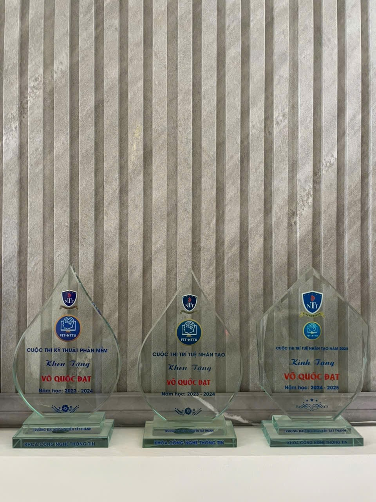
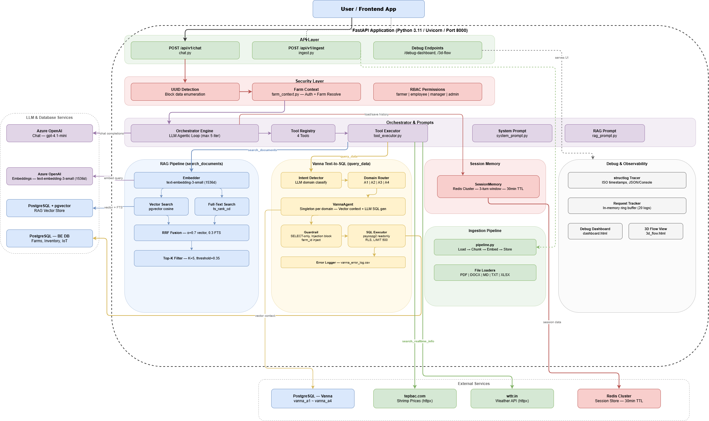
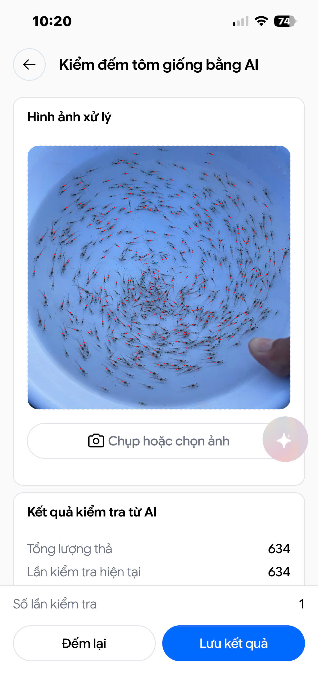

Hello, I'm
AI Engineer
Computer Vision · LLM & Multi-Agent Systems · Edge AI
Aspiring AI Engineer passionate about deep learning, computer vision, and NLP. I build intelligent systems that run in production — from multi-agent RAG chatbots to real-time person re-identification on edge devices with NPU acceleration.
Mebisoft · Ho Chi Minh City
Be-Earning · Ho Chi Minh City

NTTU AI Competition 2025
Designed a scalable RAG microservices architecture handling concurrent requests via Kafka and Docker Compose; integrated Llama 3.2 and Qdrant Vector DB.
NTTU AI Competition 2024
Built a real-time HCI system (<50ms latency) by optimizing serial communication between a Python CV pipeline and Arduino microcontrollers.
Software Engineering Competition
Developed a mobile application for student management with streamlined tracking and administration features.
Team Project
Real-time person detection, tracking, and re-identification system designed for edge devices. Achieves 3–4× performance improvement via NPU acceleration on Orange Pi hardware. Combines dual-vector matching (body + face embeddings) with CCCD/ID card recognition.

Team Project · Mebisoft AI
Multi-agent AI chatbot for high-tech shrimp farming operations. Combines RAG document retrieval with Text-to-SQL structured data queries, routing user requests through an LLM orchestrator that selects among four specialized tools.

Team Project · Mebisoft AI
Integrated mobile AI system for shrimp farming — combining three core modules in a single platform: disease diagnosis, automated counting, and size measurement. Farmers capture or upload photos to get instant AI-powered analysis results.
I'm open to AI engineering opportunities and collaborations.